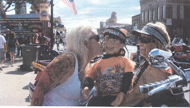

Biker dude
9/3/2011
{kind=link}

In some ways, ventriloquist figures are like children to their maker - you have to wonder what they will do and who they will become after you send them out into the world on their own. Well, not exactly "on their own", as they usually have someone at their side who helps determine the direction of their career.I would never guessed back in the early 1970s as I built "Randy" (see picture) that he would spend the next nearly 40 years hanging out with the biker crowds, but that's exactly what he's done, and continues to do! In fact, thanks to his owner, Jennie Hardesty, Randy has enjoyed (and survived) twelve trips to Sturgis, including STURGIS2011. The rest of the months of all these years has been spent at hundreds of bike meetings and rides. His "sister", "Donna" goes along for the ride on most trips.
Jeannie and husband, Rich, minister full time to bikers all across the country in a variety of ways. Randy and Donna are an important part of their work. As "step-dad" to the two "kids" I am so pleased to see who they have become. (To learn more of the Hardesty's unique ministry: http://www.jcandusministries.com/